채널: 레디포그로스 (Ready For Growth) | 길이: 23:39 | 날짜: 2026-02-07
세그먼트 1 (0:00-0:52)
화자는 시청자가 전날 밤 이미 강연 성공, 박수갈채, 통장 수억 원 같은 미래 성취를 상상했을 것이라고 전제합니다. 하지만 아침 현실은 몸이 천근만근이고, 책상 앞에서도 한 줄 기획서를 못 쓰며 유튜브 탭만 30개 넘게 열어두는 상태라고 대비시킵니다. 결론은 “도파민 가불을 넘어 보상회로가 망가진 도파민 파산 상태”라는 강한 진단입니다.
시각적으로는 인물이 IMAGINATION(상상)이라고 적힌 병을 들고 있어, 상상이 곧 중독성 물질처럼 소비된다는 프레임을 시작부터 고정합니다.
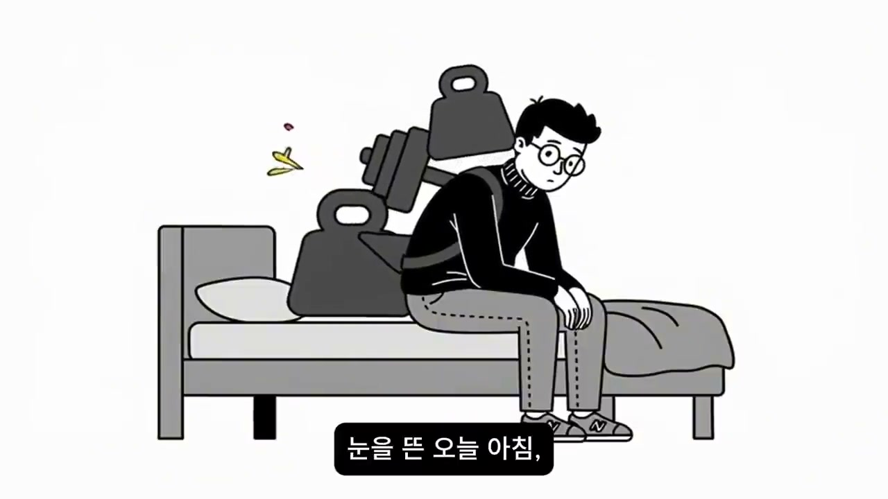
세그먼트 2 (0:52-1:43)
“2026 최신 신경과학”이라는 권위 프레임으로, 뇌가 생생한 상상과 실제 경험을 구분할 때 오차가 2%라는 수치를 제시합니다. 상상 속 성공을 만끽하는 순간 뇌가 “이미 성공했다”고 착각해 실제 행동용 도파민 분출을 중단한다는 논리입니다. 화자 본인도 이를 깨닫기 전엔 “지독한 상상 중독자”였고, 머릿속에선 베스트셀러 작가였지만 현실에선 3개월째 블로그 포스팅 하나 못 올린 패배자였다고 자기고백합니다(자막상 ANFP/INFP 혼용).
화면은 현실의 인물 옆에 컬러 소용돌이에 감싼 ‘상상 속 자아’를 분리 배치해, 이중 자아 구조를 직접 시각화합니다.
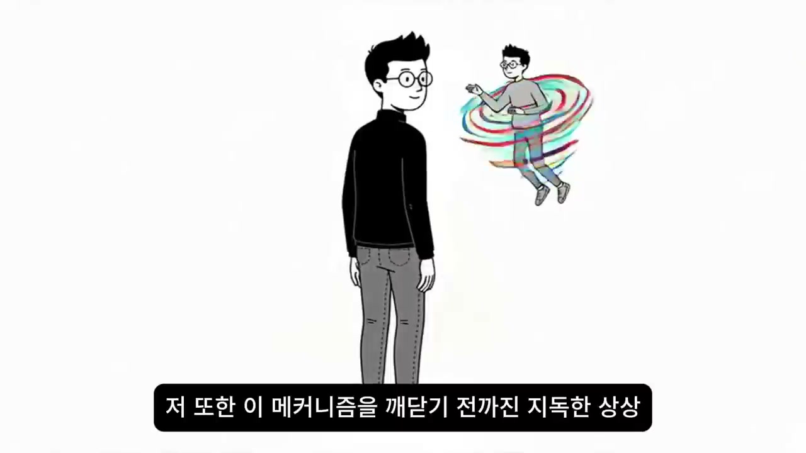
세그먼트 3 (1:43-2:32)
전두엽이 미래 성공의 도파민을 이미 당겨 써버려 현실 고통을 견딜 에너지가 고갈됐다고 설명합니다. 핵심은 “의지 부족이 아니라 뇌가 너무 똑똑해 지름길(상상 보상)을 택한 것”이라는 재해석입니다. 도파민은 원래 고통스러운 과정을 견딘 뒤 결과물을 냈을 때 주어져야 하는데, 상상은 노력 없이 보상만 챙기는 사기극이며, 그 대가로 실제 행동 시 강한 거부반응이 생긴다고 주장합니다.
시각적으로는 아침에 침대에 앉은 인물 등에 무거운 추(짐)가 실려 있어, ‘이미 소진된 상태’를 물리적 하중으로 형상화합니다.
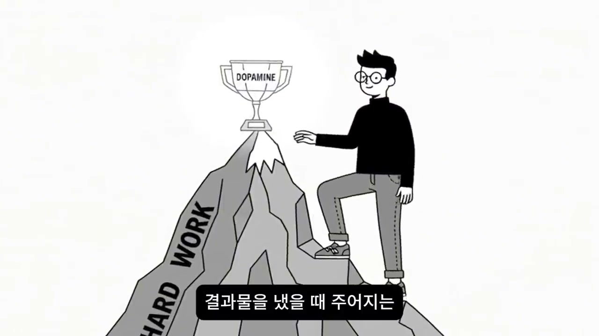
세그먼트 4 (2:32-3:27)
스탠퍼드 심리학 연구팀 데이터라며, “결과 시각화 그룹이 과정 시각화 그룹보다 목표 달성률이 45% 낮다”고 제시합니다. IN 계열에게 이 데이터는 일종의 사형선고처럼 들릴 수 있으며, 강점이라 믿은 상상력이 실행력을 죽이는 독일 수 있다는 메시지입니다. 상상 네온이 밝아질수록 현실은 회색으로 변하고, 뇌는 녹슨 통리바퀴처럼 생각 과부하에 걸려 멈춘다는 은유가 이어집니다.
화면에 HARD WORK라고 쓰인 산과 정상의 DOPAMINE 트로피를 배치해 “노력 뒤 보상”의 원래 질서를 강조합니다.
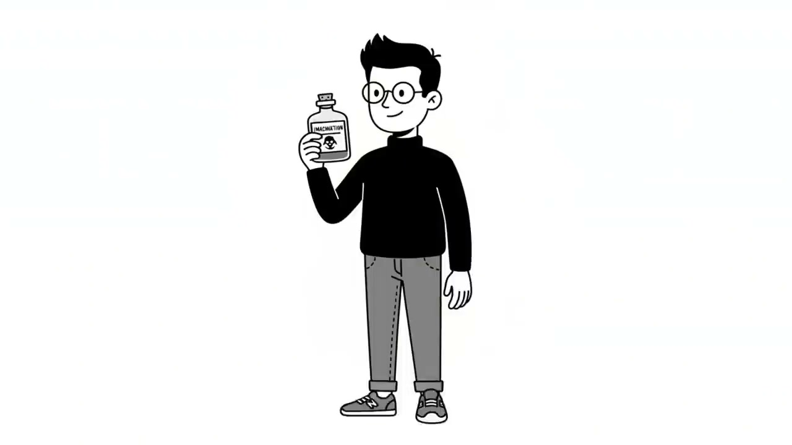
세그먼트 5 (3:27-4:21)
이제 사슬을 끊어야 한다며 전두엽 복구용 신경과학 알고리즘을 예고합니다. 범인을 “복측선조체(보상 예측 시스템)와 전두엽(이성 통제) 사이 통신 오류”로 지목합니다. 침대에서 미래 성공을 생생히 그리면 복측선조체는 이미 축제 모드로 도파민을 과분비하고, 전두엽은 원래 “가짜다, 아직 아무것도 안 했다”라고 제동해야 한다는 구조입니다.
화면은 Ventral Striatum과 Prefrontal Cortex 사이에 Error 번개를 넣어 오류를 도식화합니다.
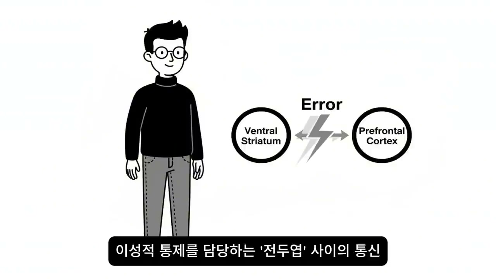
세그먼트 6 (4:21-5:12)
특히 INFP의 정교한 상상력 때문에 전두엽이 가짜 신호를 진짜 성취로 필터링 없이 수용한다고 말합니다. 이게 반복되면 내성이 생겨 현실 행동(책상에 앉아 타이핑)은 “1% 도파민도 안 주는” 행위처럼 느껴지고, 결국 더 자극적인 상상으로 도망친다고 합니다. 화자는 이를 마약 중독 메커니즘과 정확히 일치한다고 규정합니다.
화면에는 REALITY 수도꼭지에서 도파민이 한 방울씩 떨어지는 장면이 나오며, 현실 보상의 미세함을 직관적으로 보여줍니다.
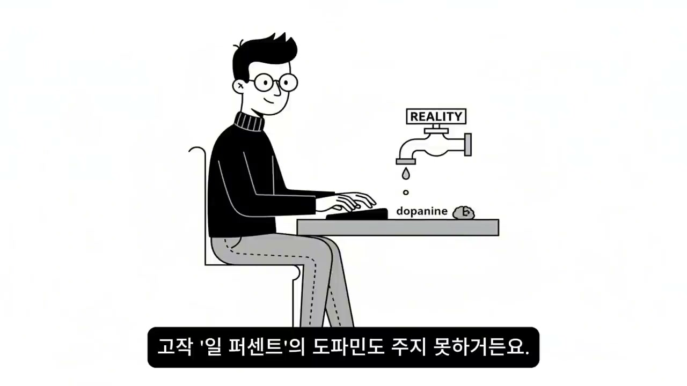
세그먼트 7 (5:12-6:02)
2025년 겨울 개인 실패 사례를 꺼내 신뢰를 확보합니다. 카페에서 강남 오피스, 수십 명 직원, 인터뷰 요청 쇄도 같은 성공 장면을 매일 상상했지만, 실제 노트북엔 ‘제목 없음’ 파일만 수십 개 쌓였다고 고백합니다. 거울 속 자신을 “가짜 도파민에 취한 중독자”로 묘사한 뒤, 2026 하버드 의대 정신건강연구소 임상 데이터 인용으로 넘어갑니다.
시각적으로 인물은 당당히 걷지만 자막은 “이미 성공한 사람처럼 행동했다”로, 외형 자신감과 실질 성과의 괴리를 드러냅니다.
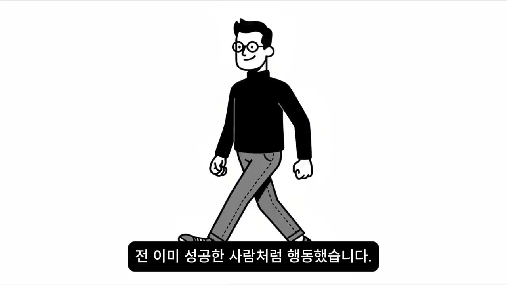
세그먼트 8 (6:02-6:55)
하버드 인용의 구체 수치로 “상상 속 성취 의존 집단은 전두엽 활성도가 일반인보다 30% 이상 낮다”고 제시합니다. 시작 순간마다 “이게 최선인가? 더 완벽한 방법은?” 같은 생각에 첫발조차 못 떼면 그것이 전두엽 파산의 증거라고 규정합니다. 결론은 “당신은 게으른 게 아니라, 상상이라는 공짜 마약에 취해 현실이라는 거친 음식을 거부하는 상태”이며, 곧 반직관적 제안을 던지겠다고 전환합니다.
화면의 Is this best? 말풍선 다중 반복은 완벽주의-과잉검토 루프를 직접 보여줍니다.
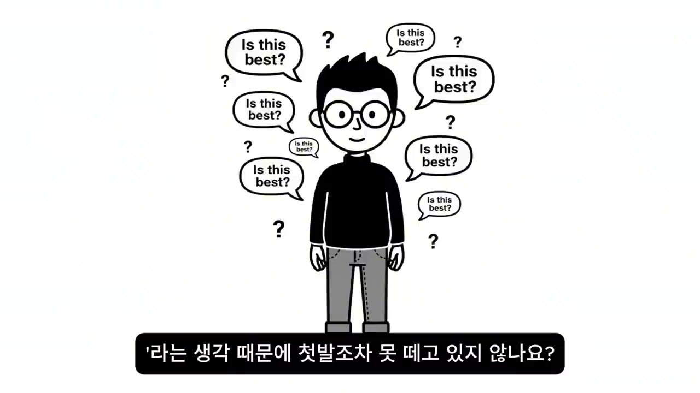
세그먼트 9 (6:55-7:46)
지금까지 들은 자기계발 내용과 정반대라며 긴장감을 올립니다. 오늘부터 성공 상상을 즉시 중단하고, 긍정 시각화/미래 자아 그리기를 “쓰레기통에 버리라”고 극단적으로 말합니다. 이유는 달콤한 상상이 실행력을 죽이는 독약이라는 것, 그리고 대안 전략이 2026 최신 행동심리학의 정수라는 주장입니다.
화면에 Positive Visualization, Future Self/Future 카드가 실제로 휴지통에 들어가며 메시지를 상징화합니다.
세그먼트 10 (7:46-8:39)
대안은 “과정 시각화 + 도파민 디톡스 알고리즘”입니다. 첫 전략은 결과가 아니라 오늘 겪을 지루함/막막함을 생생히 시뮬레이션하는 것: “내일 유명 작가가 된다” 대신 “내일 8시에 앉아도 한 문장 안 떠올라 괴로운 나”를 상상하라고 합니다. NYU 가브리엘 외팅엔의 WOOP를 언급하지만, 본인 방식이 더 근본적이라고 강조합니다.
화면은 뿌리째 파헤치는 삽질 장면으로, 겉 성공 이미지가 아니라 뿌리(과정) 작업을 보라고 유도합니다.
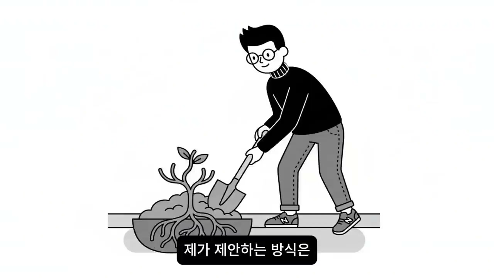
세그먼트 11 (8:39-9:27)
고통 시뮬레이션 안에서도 “키보드를 한 번 누르는 장면”까지 각인하라고 지시합니다. 뇌는 예상 못한 고통엔 무너지지만, 예견된 고통엔 훨씬 잘 대응하므로 실제 상황에서 “아, 이건 내가 상상한 그 지루함이네”로 인식해 도파민 소모 없이 수행을 이어간다는 설명입니다. 이것을 IN 계열 생각 과잉을 실행으로 바꾸는 첫 스위치라 부릅니다.
화면에 Just as planned. 말풍선을 넣어, 현실 고통을 ‘계획된 사건’으로 재해석하는 프레임을 고정합니다.
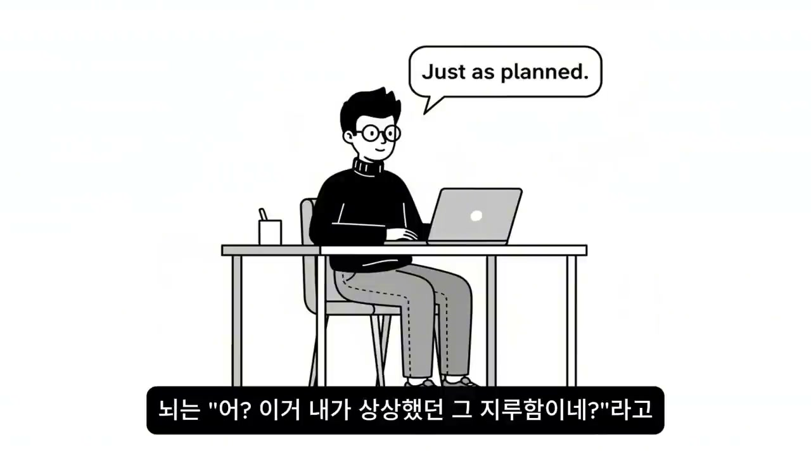
세그먼트 12 (9:27-10:18)
두 번째 전략은 보상 단위를 쪼개는 “마이크로 도파민 스택”입니다. 거창한 결과 보상을 기다리는 구조를 버리고, 5분 집중 같은 극소 과업에서도 고밀도 도파민이 나온다는 2026 옥스퍼드 신경과학팀 데이터를 인용합니다. 또한 이 도파민이 전두엽 인지기능 회복에 결정적이라고 주장합니다.
화면은 코인 스택 형태의 Micro Dopamine 시각 요소로, 보상 누적의 미세 단위를 도식화합니다.
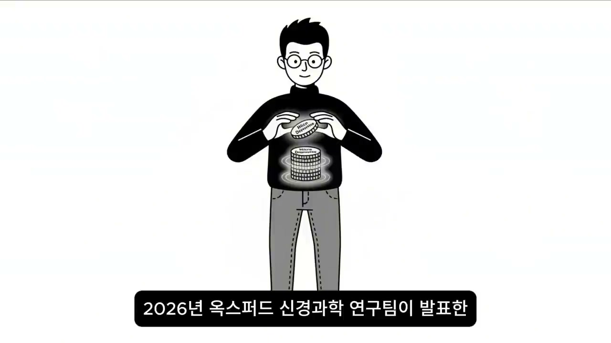
세그먼트 13 (10:18-11:09)
“진짜 도파민을 맛보려면 뇌를 영악하게 속여야 한다”는 문장으로 실천 절차를 제시합니다. “오늘 계획 완벽히 다 쓰기” 대신 “노트북 켜고 빈 문서 5분 열어두기” 같은 실패하기 어려운 성공을 입력하라고 합니다. 한 줄 작성/자료조사 1개 완료마다 아주 작은 물리 보상(차 한 모금, 좋아하는 음악 한 곡)을 주고, 상상 유혹이 들 때는 단호히 제동하라고 말합니다.
화면에 REWARD 금고가 등장해 보상을 엄격 관리하는 의미를 시각화합니다.
세그먼트 14 (11:09-12:03)
내적 대사로 “이건 가짜야, 내가 한 줄 썼을 때 나오는 도파민만 진짜 자산”을 주입하라고 합니다. 화자는 이 루틴 적용 뒤 몰입도가 40% 향상됐고, 스탠퍼드 주의력 회복 이론과 개인 임상 결과가 98% 일치했다고 주장합니다. 이어 “영감이 있어야 움직인다”는 반론을 제기한 뒤, 영감은 실천하지 않는 자들이 만든 달콤하고 치명적인 핑계라고 반박합니다.
화면에는 98% MATCH 배지가 붙은 그래프 2장이 제시되어 수치 신뢰를 강화합니다.
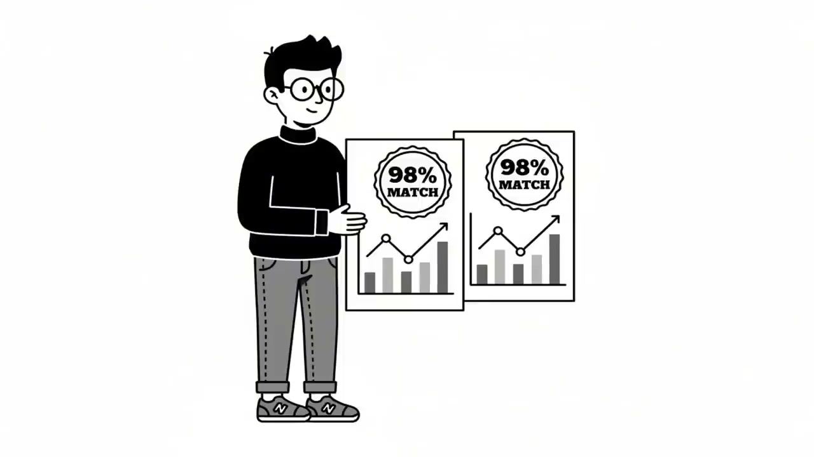
세그먼트 15 (12:03-12:53)
신경과학적으로 영감은 기다림이 아니라 행동 과정에서 전두엽-두정엽이 교차 활성화되며 생기는 부산물이라는 설명을 붙입니다. 따라서 영감 없이도 성과를 내는 IN 전용 실전 알고리즘을 공개하겠다고 선언하고, 첫 지침으로 “5초 실행 알고리즘 하드코딩”을 제시합니다. 이 지점부터 영상이 이론에서 행동 프로토콜로 본격 전환됩니다.
화면은 자기 자신을 가리키는 인물로, “외부 자극이 아니라 자기 지시”를 강조하는 구도입니다.
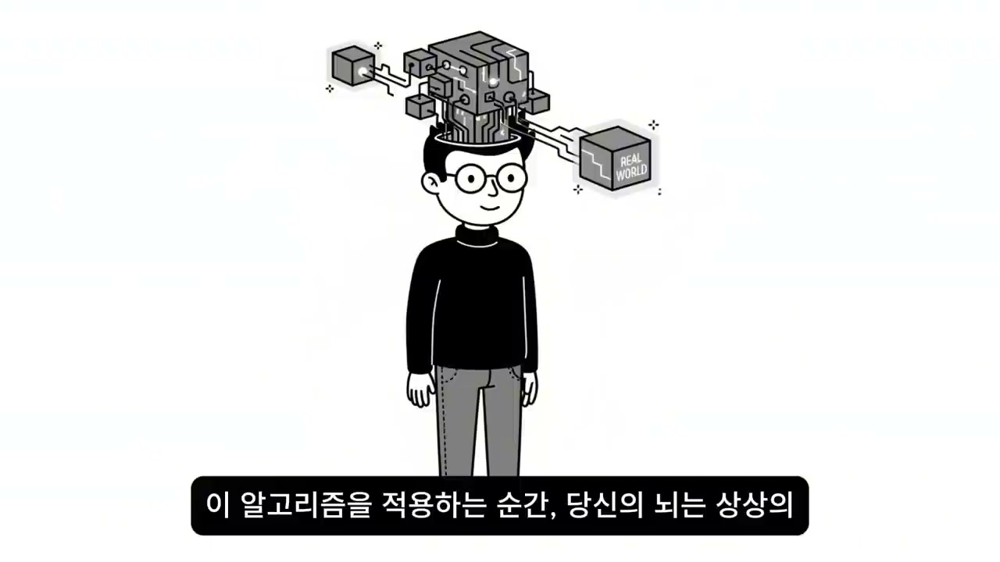
세그먼트 16 (12:53-13:41)
해야 할 생각이 스치는 순간, 상상 날개가 펴지기 전에 5초 안에 몸을 움직이라고 지시합니다. 5-4-3-2-1 역카운트 후 “그냥 일어나라, 생각은 다음”이라는 규칙입니다. 두 번째 지침은 시각 노이즈 차단: 수십 개 브라우저 탭은 전두엽이 수십 개 상상 경로를 동시에 열어 에너지를 낭비한다는 증거라고 진단합니다.
화면에 5,4,3,2,1 숫자가 크게 배치되고 의자에서 즉시 일어나는 장면이 실행 트리거를 시각화합니다.
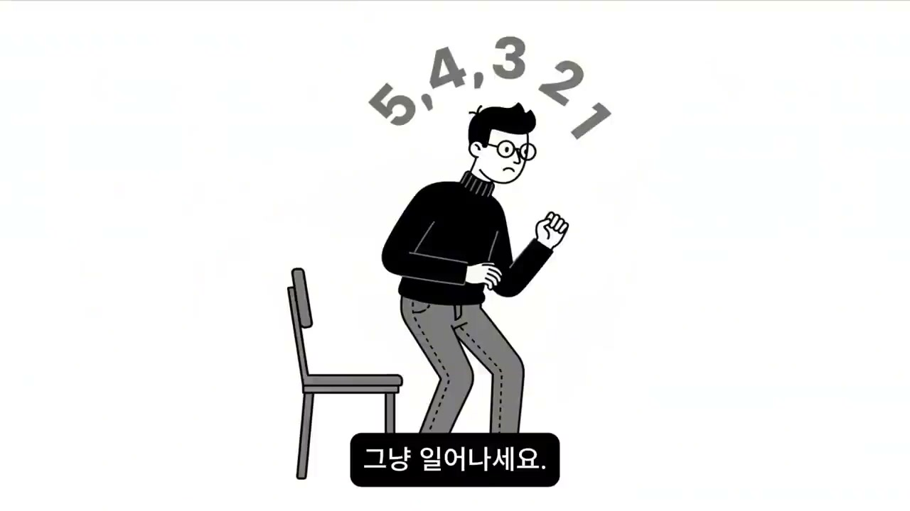
세그먼트 17 (13:41-14:31)
지금 필요한 탭 하나만 남기고 모두 닫으라고 즉시 지시합니다. 환경이 단순해질 때 뇌는 상상 미로에서 빠져나와 현실 과업 집중 상태로 복귀한다는 논리입니다. 세 번째 지침은 의도적 불완전성: 완벽하게 시작하려는 욕심이 INFP의 병목이므로 “오늘 망한 글을 쓸 것이다”라고 선언하고 시작하면 과부하가 풀려 실행 통리바퀴가 돈다고 설명합니다.
화면의 산 텍스트가 PERRFECT STAART(의도적 오타)로 표현돼 완벽주의 집착을 풍자합니다.
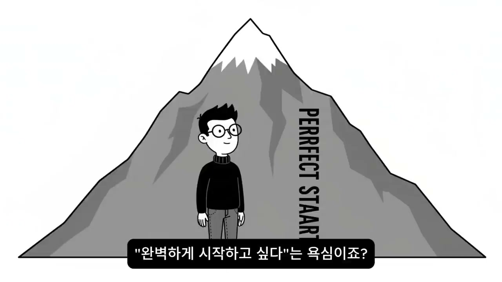
세그먼트 18 (14:31-15:24)
2026 행동심리학 데이터로, 초기 결과물 품질을 최하로 설정한 그룹이 최고로 설정한 그룹보다 최종 완료 시간이 60% 단축됐다고 제시합니다. 핵심 열쇠는 “의도적인 허술함”이며, 당신이 게으른 게 아니라 정보 처리 방식이 촘촘하고 섬세해서 과부하에 더 취약하다는 재해석입니다. 따라서 상상이라는 가짜 연료 대신 작은 현실 행동이라는 진짜 연료를 넣으라고 강조합니다.
화면은 머리 위 뇌/회로와 REAL WORLD 큐브 연결 구조로, 상상-현실 연산 변환의 상징을 보여줍니다.
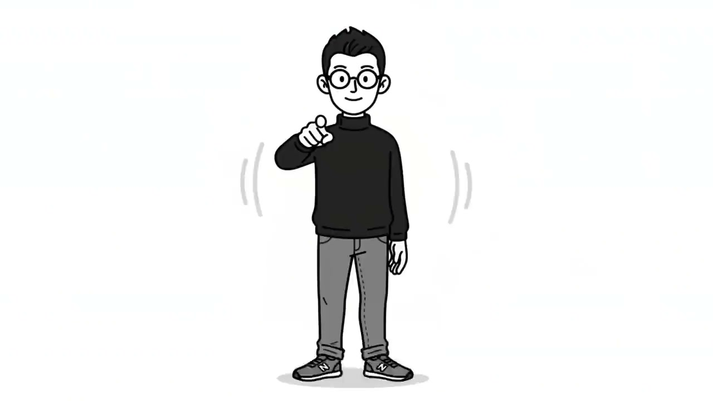
세그먼트 19 (15:24-16:15)
마지막 안전장치로 물리적 앵커링을 제시합니다. IN 계열은 생각 과잉으로 신체 감각을 잃기 쉬워 “머리는 화성에 있는데 발가락 감각은 없음” 상태가 잦다고 진단합니다. 2026 독일 베를린 자유대 인지신경과학팀 연구를 인용하며, 특정 신체 압박/차가운 물 접촉 같은 물리 자극이 유효하다고 설명을 이어갑니다.
화면은 상반신은 우주(행성들) 속, 하반신은 바닥 감각 둔화 상태로 분절 묘사해 ‘체화 분리’를 시각화합니다.
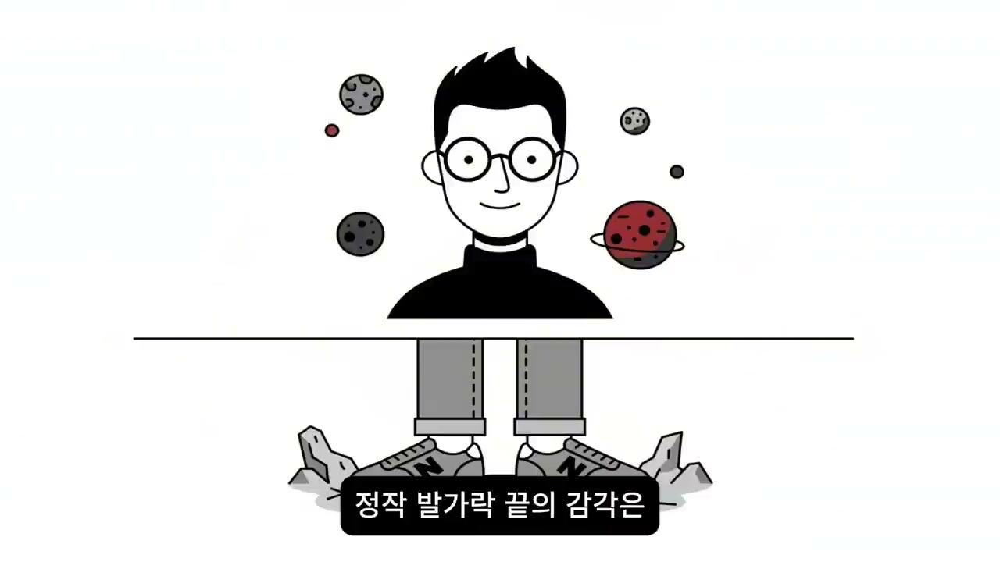
세그먼트 20 (16:15-17:06)
연구 결과로 DMN(기본모드네트워크, 잡생각 회로)이 2초 만에 차단되고 전두엽 실행 제어력이 85% 이상 회복됐다고 주장합니다. 실천 예시는 매우 단순합니다: 책상을 세게 한 번 내리치기, 자리에서 일어나 팔 벌려 뛰기 10회 같은 ‘무식한 물리 행동’으로 상상 가불 회로를 강제 종료하라는 것입니다. 이어 모든 전략을 하나로 묶는 마지막 마음가짐 전환을 예고합니다.
화면은 책상 내려치기/점핑잭/정지 자세 3단 구도로 즉시 전환 가능한 행동 카드를 보여줍니다.
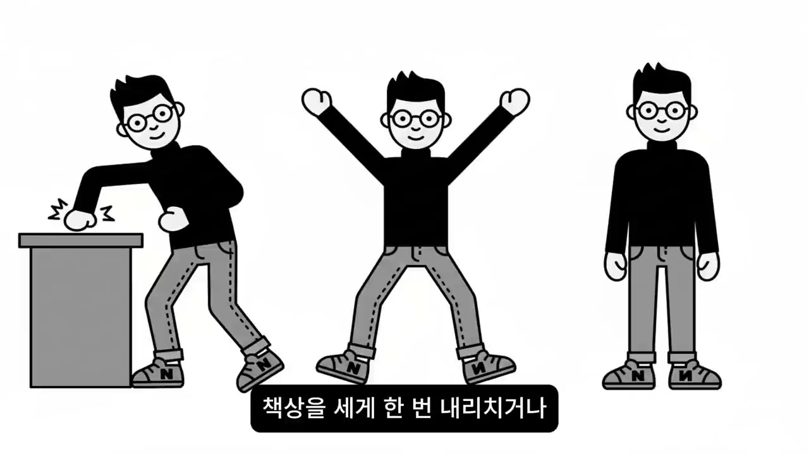
세그먼트 21 (17:06-17:57)
“무한한 잠재력” 신념을 정면 반전시켜, 쓰지 않는 잠재력은 자산이 아니라 부채라고 말합니다. 상상만 하고 실행하지 않은 아이디어는 뇌에 도파민 채무를 쌓고, 이자는 자괴감·무기력으로 갚게 된다는 은유입니다. 또한 상상 성공을 즐길 때마다 미래의 나에게서 열정과 에너지를 훔치는 도둑질이라고 규정하며 중단을 촉구합니다.
화면의 Ideas 더미와 붉은 음수 값(-100, -250, -500, -750)은 아이디어가 부채로 누적된다는 프레임을 시각화합니다.
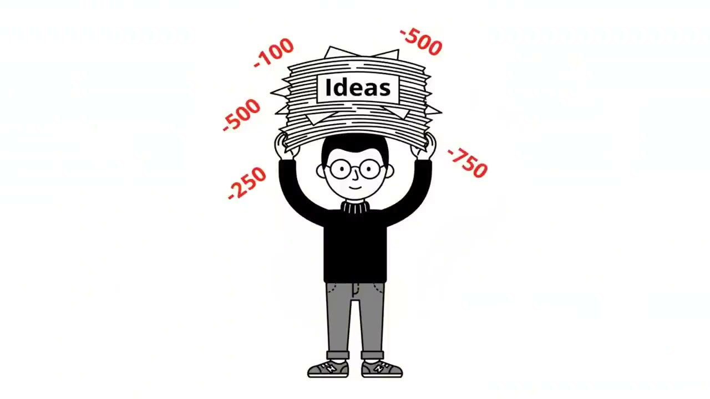
세그먼트 22 (17:57-18:48)
2026 심리학 리포트 인용으로 현대인 우울감의 70%가 “생각하는 나-행동하는 나”의 괴리에서 온다고 주장합니다(특히 INFP에 치명적). 해결책은 상상력 폐기가 아니라 용도 변경: 미래 소비재가 아니라 현재 도구로 전환하는 것입니다. 꿈 포기가 아니라 뇌 연료 절약이며, 한 줄 문장/정리된 책상 같은 투박한 현실 행동을 통해서만 상상력이 빛난다고 말합니다.
화면에는 TRANSLATION SPEED 계기판이 IMAGINATION→REALITY 쪽으로 치우쳐, 상상-현실 번역 속도를 성장 지표로 정의합니다.
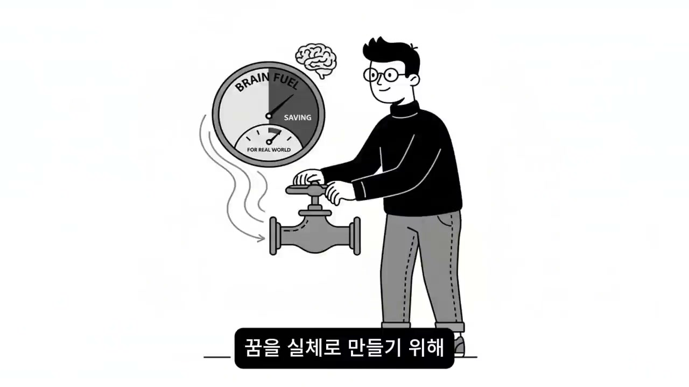
세그먼트 23 (18:48-19:37)
현실에는 상상보다 고통과 지루함이 많지만, 그곳에서 분비되는 도파민만이 뇌를 진짜로 성장시킨다고 강조합니다. 성장의 정의를 “상상을 현실로 번역하는 속도 증가”로 제시하고, 어제 상상만 했다면 오늘 단 5분이라도 글자/숫자/행동으로 옮기라고 요구합니다. 그 5분이 누적되면 파산한 전두엽 복구와 개인 성장 알고리즘 완성으로 이어진다는 구조입니다.
화면의 BRAIN FUEL 계기와 SAVING, FOR REAL WORLD 미터, 밸브 조작 장면은 연료 배분의 의도적 통제를 상징합니다.
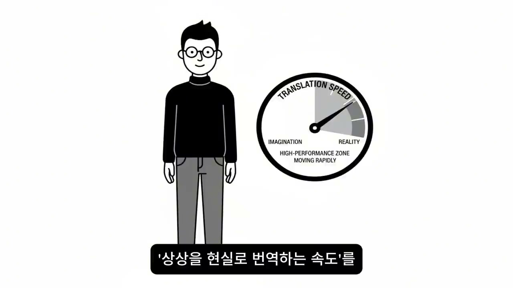
세그먼트 24 (19:37-20:31)
“당신의 뇌는 이미 준비되어 있다, 문제는 가짜 보상으로 뇌를 속인 것”이라며 재동기화합니다. 상상 성공은 신기루처럼 사라지지만 오늘의 땀 한 방울은 신경망에 영구 각인된다고 대비합니다. 2026 환경(쇼츠, 타인의 화려한 일상, 자기 성취 환상)이 가짜 보상에 과노출돼 있음을 경고하고, 진짜 자아는 프로필/거대 계획이 아니라 반복 행동에서 만들어진다고 정리합니다.
화면은 인물이 구름(상상)에서 바닥 격자(현실)로 뛰어내리는 도약 장면으로 전환을 표현합니다.
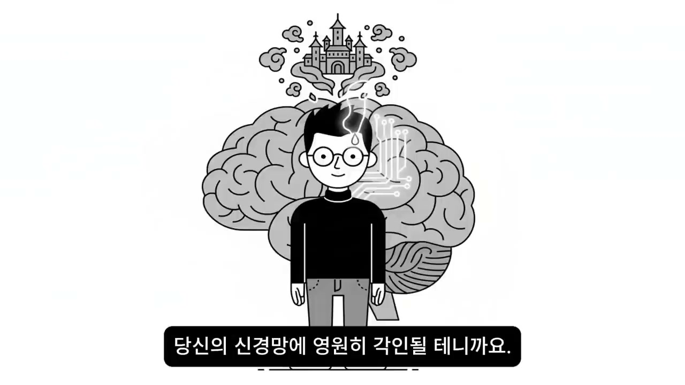
세그먼트 25 (20:31-21:23)
아무도 보지 않는 방에서 견딘 지루함 속 투박한 1000문장이 진짜 자신을 만든다고 말합니다. INFP의 내면 세계는 축복이지만 감옥이 되지 않게 하려면 손발이 머리보다 먼저 움직여야 하며, “언젠가”를 “지금 당장”으로 바꾸라고 촉구합니다. 완벽한 타이밍은 오지 않고, 불완전한 첫걸음이 타이밍을 완벽하게 만든다는 메시지입니다.
화면은 전진 자세의 인물을 크게 배치해 “생각 선행”이 아니라 “행동 선행”을 직접 형상화합니다.
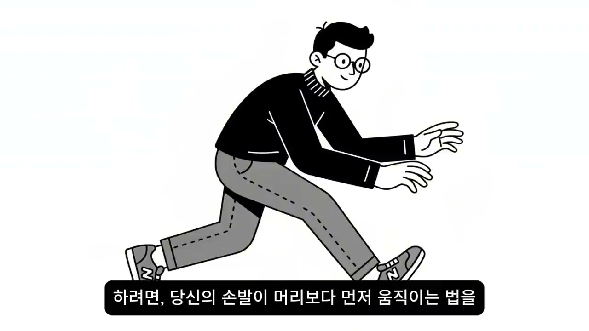
세그먼트 26 (21:23-22:12)
2026 긍정심리학 저널 메타분석 인용으로 “삶의 만족도가 가장 높은 집단은 높은 목표 집단이 아니라 낮은 시작 문턱 집단”이라는 결론을 제시합니다. 그들은 오늘 통제 가능한 아주 작은 행동 하나에 집중했고, 이것이 거대한 확신과 결과물로 이어졌다고 말합니다. 상상력 엔진에 실행 기어를 넣으라는 문장으로 행동-상상 결합 모델을 완성하고, 상상 신용카드를 찢어버리라고 강하게 마무리합니다.
화면은 IMAGINATION ↔ ACTION 슬라이더를 손가락으로 조작해 모드 전환의 기계적 느낌을 강화합니다.
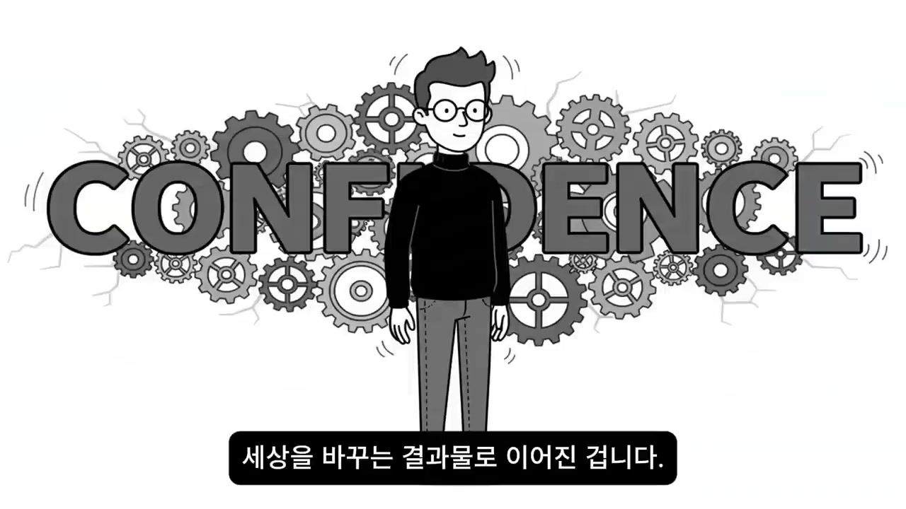
세그먼트 27 (22:12-23:03)
이제 어제의 가짜 도파민 중독자와 작별할 시간이라며 즉시 댓글 행동을 요구합니다. “오늘 5분 투자로 가능한 마이크로 액션”을 적으라고 하며 예시(기획안 제목 쓰기, 운동화 신기, 책 1페이지 읽기)를 제공합니다. 그 문장을 타이핑하는 손가락 움직임 자체가 상상 모드→실행 모드 첫 스위치라고 규정하고, 채널 정체성을 “데이터로 증명하고 심리로 해결하는 성장 전략 연구소”로 재강조합니다.
화면은 기어(톱니) 배경과 CONFIDENCE 텍스트를 배치해 작은 행동이 자신감 기계로 증폭된다는 은유를 만듭니다.
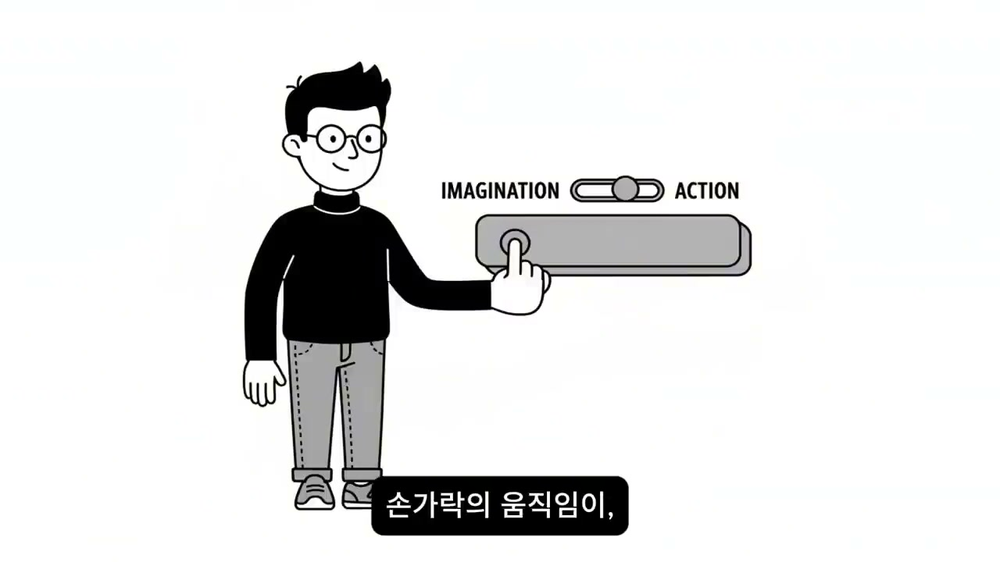
세그먼트 28 (23:03-23:39)
최종 CTA는 구독/좋아요/알림을 “실행 의지 증명”으로 연결합니다. 알림 설정을 전두엽을 깨우는 확실한 알람으로 표현하며, “데이터는 거짓말하지 않는다, 오늘 움직인 만큼 미래가 진짜가 된다”는 문장으로 종결합니다. 마지막은 “데이터답게 밀도 있게 살라”는 채널 톤으로 감사 인사를 전합니다.
화면은 종결부 실천 메시지를 받쳐주는 안정적 정면 구도로 마무리됩니다.
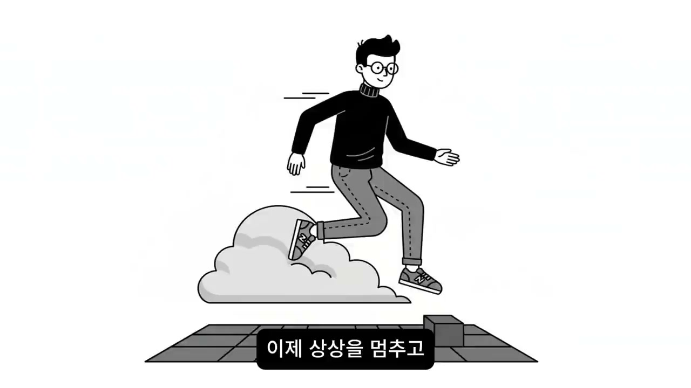
결과 상상 중단, 과정 고통 예행연습, 마이크로 보상, 물리적 앵커링. 이 4개가 영상 전반의 모든 예시와 데이터 주장에 반복 결합됩니다.
댓글
GitHub 이슈 기반 댓글 시스템입니다.